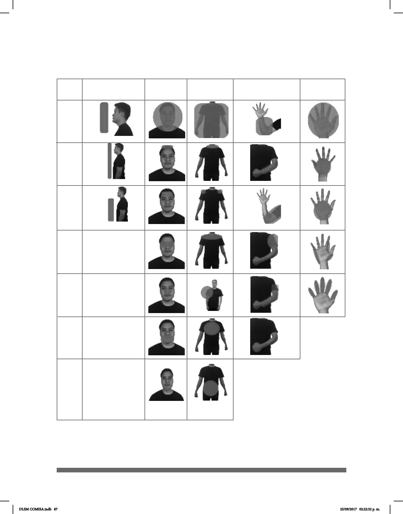

<div id="pf57" class="pf w0 h0" data-page-no="57"><div class="pc pc57 w0 h0"><div class="t m0 x17 h7 y85 ff1 fs6 fc0 sc0 ls0 ws0">87</div><div class="t m0 x60 h9 y8e6 ff5 fs8 fc0 sc0 ls3 ws0">CARA</div><div class="t m0 x5a h9 y8e7 ff5 fs8 fc0 sc0 ls3 ws0">BRAZOS</div><div class="t m0 x9c h9 y8e8 ff5 fs8 fc0 sc0 ls3 ws0">MANOS</div><div class="t m0 x63 h9 y8e7 ff5 fs8 fc0 sc0 ls3 ws0">CUERPO</div><div class="t m0 x65 h29 y8e9 ff5 fs1b fc0 sc0 ls16 ws0">IMAGEN LA<span class="_ _4"></span>TERAL DE LA<span class="_ _4"></span> </div><div class="t m0 x9d h29 y8ea ff5 fs1b fc0 sc0 ls16 ws0">UBICACIÓN FRONT<span class="_ _4"></span>AL</div><div class="t m0 x7 h9 y8eb ff5 fs8 fc0 sc0 ls0 ws0">1</div><div class="t m0 x7 h9 y8ec ff5 fs8 fc0 sc0 ls0 ws0">2</div><div class="t m0 x7 h9 y8ed ff5 fs8 fc0 sc0 ls0 ws0">3</div><div class="t m0 x7 h9 y8ee ff5 fs8 fc0 sc0 ls0 ws0">4</div><div class="t m0 x7 h9 y8ef ff5 fs8 fc0 sc0 ls0 ws0">5</div><div class="t m0 x2f h9 y8f0 ff5 fs8 fc0 sc0 ls0 ws0">6</div><div class="t m0 x2f h9 y8f1 ff5 fs8 fc0 sc0 ls0 ws0">7</div><div class="t m0 xa h9 yc0 ff5 fs8 fc0 sc0 ls0 ws0">En esta tabla se muestran las imágenes de las diferentes ubicaciones donde las señas </div><div class="t m0 xa h9 y4ad ff5 fs8 fc0 sc0 ls0 ws0">pueden ser articuladas:</div><div class="t m0 x6 h4 y7 ff3 fs4 fc0 sc0 ls0 ws0">DLSM COMISA.indb   87<span class="_ _17"> </span>25/09/2017   02:22:32 p. m.</div></div><div class="pi" data-data='{"ctm":[1.000000,0.000000,0.000000,1.000000,0.000000,0.000000]}'></div></div>
